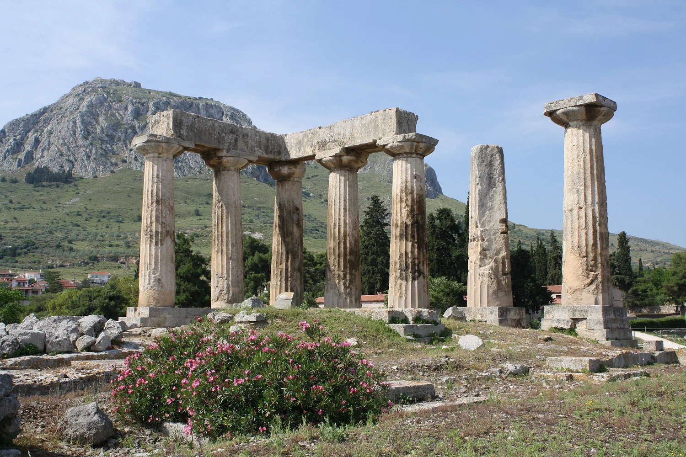

Greek and Hellenistic Garden Design
During the Hellenistic period, gardens were created as artistic expression refined with meticulous layouts and the use of water features. The designs originated from the concept of a paradise garden; characterized with trees of fruit, water and flowers. Symbolism in architecture was a pillar in the Hellenistic landscape often using mythology depicting gods and goddess in sculptures. Gardens played a role for socializing, philosophical discourse and showcasing wealth. Symmetry and geometric shapes that echoed principles of order provided a sanctuary.
Ancient Greek and Hellenistic Garden Design

Ancient Greek and Hellenistic Garden Design
Ancient Greek and Hellenistic gardens developed from a deep appreciation for **nature, order, beauty, philosophy, and the relationship between landscape and human life**. While earlier Greek landscapes often emphasized sacred groves, orchards, courtyards, and productive planting, the **Hellenistic period (323–31 BC)** saw garden design become increasingly elaborate and theatrical. As Greek culture expanded throughout the eastern Mediterranean and Near East following the conquests of Alexander the Great, gardens absorbed influences from many regions. Royal courts and wealthy households created increasingly sophisticated landscapes in which **architecture, sculpture, water, vegetation, and geometry** were brought together as a unified artistic composition. The garden became more than a place for growing plants. It became an **outdoor room for living, contemplation, entertainment, ceremony, and display**.
The Idea of the Paradise Garden
One of the important ideas influencing Hellenistic landscape design was the concept of the **paradeisos**, a cultivated enclosure or pleasure garden. The term originally referred to enclosed, managed landscapes in the broader eastern Mediterranean and Near Eastern world and became associated with the Greek conception of an ideal garden. The paradise garden was characterized by the deliberate combination of:
* Fruit-bearing trees
* Flowering plants
* Shade trees
* Water
* Enclosed spaces
* Paths and walks
* Architectural structures
* Sculpture
* Fragrance
* Areas for relaxation and social activity
Rather than attempting to imitate untouched wilderness, the garden represented **nature refined and ordered by human intelligence**. This idea became particularly important in Hellenistic royal gardens, where carefully managed landscapes could demonstrate both the abundance of nature and the power required to organize it.
Geometry, Symmetry and Order
Greek thought placed considerable importance on **proportion, balance, harmony, and mathematical order**, and these principles could be reflected in landscape design. Formal gardens could use:
* Straight pathways
* Rectangular courtyards
* Symmetrical planting
* Geometric beds
* Repeated rows of trees
* Axial views
* Terraces
* Enclosed garden rooms
* Carefully positioned architectural features
The geometry of the garden created a sense of calm and predictability. Trees, columns, paths, pools, and buildings could be aligned so that one feature visually led to another. This relationship between **nature and mathematical order** was particularly important to the Greek conception of beauty. The garden was not simply a collection of plants; it was a composition in which individual elements contributed to a larger harmonious whole.
Water as an Artistic Element
Water became an increasingly important component of elaborate Hellenistic landscapes. Fountains, basins, channels, pools, and springs provided both practical and aesthetic functions. In Mediterranean climates, water was naturally associated with fertility, prosperity, refreshment, and life. A fountain could become the focal point of a courtyard, while a long pool might establish a visual axis through the garden. Water could also be used to reflect surrounding architecture and sculpture. The sound of moving water added another sensory dimension. A fountain hidden among vegetation could provide a gentle background sound, while a monumental fountain could become an architectural centerpiece. Water therefore transformed the garden from a purely visual landscape into a multi-sensory environment.
Fruit Trees and the Productive Garden
The ideal Greek garden was not necessarily separated into an ornamental garden and a productive landscape. Fruit trees could be both useful and beautiful. Olives, figs, grapes, pomegranates, apples, pears, and other fruiting plants could contribute to the garden's abundance. Orchards and shaded walks could become places for conversation and relaxation. The productive garden reflected an important Greek ideal: the cultivation of nature could provide both physical nourishment and intellectual pleasure. The presence of fruit trees also reinforced the concept of the garden as a place of abundance—a cultivated paradise in which food, shade, water, fragrance, and beauty were brought together.
Sacred Groves and the Gods
The Greek relationship with gardens was also deeply connected to religion and mythology. Certain trees, plants, springs, and groves were associated with particular deities. Sacred landscapes could be dedicated to gods and heroes and might contain temples, altars, statues, springs, or groves. Mythology provided a rich visual vocabulary for garden design. Sculptures representing **Aphrodite, Apollo, Dionysus, Artemis, Hermes, Athena, and other deities** could be incorporated into important landscapes. These sculptures were not simply decorative objects. They connected the garden with stories about the gods, nature, beauty, fertility, love, music, hunting, wine, and the human condition.
Sculpture and Feature
Hellenistic gardens increasingly became settings for sculpture. Statues could be positioned:
* At the end of an avenue
* Beside fountains
* Within planting beds
* Along garden walls
* Beneath trees
* Beside pools
* Within colonnades
* At entrances and thresholds
The relationship between sculpture and planting was particularly important. Vegetation provided a natural backdrop for marble figures, while statues introduced human and mythological forms into the landscape. This created a theatrical quality in which **architecture, sculpture, and vegetation framed one another**.
Architecture and the Garden
The Hellenistic garden was often closely integrated with architecture. Rather than treating the garden as something separate from the house or palace, designers could create a continuous relationship between **interior rooms, courtyards, terraces, and planted spaces**. Columns and colonnades provided shaded walking areas. Terraces allowed gardens to step down slopes, creating different levels and viewpoints. Pavilions, porticoes, fountains, and garden buildings provided places to pause and enjoy the landscape. The garden could therefore function almost like an extension of the house—a series of outdoor rooms connected by carefully planned visual and physical routes.
The Garden as a Place of Philosophy
The Greek garden was also associated with intellectual life. Gardens and shaded outdoor spaces provided environments for conversation, teaching, contemplation, and philosophical discussion. The most famous example is the Academy, traditionally associated with Plato, whose grounds included a sacred grove outside Athens. The Garden of Epicurus later became particularly associated with philosophical community. Epicurus established his school in a garden in Athens, where philosophical discussion and communal life were central. This connection between gardens and philosophy reinforced the idea that a cultivated landscape could provide a sanctuary for the **mind as well as the body**.
Social Life and Entertainment
Hellenistic gardens also served important social functions. A wealthy garden could provide settings for:
* Banquets
* Music
* Conversation
* Walking
* Philosophical discussion
* Religious ceremonies
* Entertaining guests
* Private relaxation
* Royal celebrations
The garden became an environment where people could move between architecture and nature, shifting from formal gatherings to quiet contemplation. For wealthy owners and royal courts, an elaborate garden could also communicate cultural sophistication and access to resources.
The Garden as a Display of Wealth
Large Hellenistic gardens required substantial investment. Water systems, stonework, sculptures, mature trees, skilled gardeners, and architectural features all required resources. Consequently, gardens could communicate the wealth and status of their owners. A magnificent fountain, imported sculpture, carefully cultivated fruit trees, or extensive terrace garden demonstrated the ability to control and organize nature. Royal gardens were especially powerful expressions of authority. They presented the ruler as someone capable of creating an ordered, abundant environment—a cultivated paradise under human control.
Terraces and Mediterranean Slopes
Because much of the Greek landscape is mountainous or hilly, terraces became an important tool for organizing gardens. Stone retaining walls could create level planting areas on slopes. These terraces allowed designers to establish:
* Orchards
* Vineyards
* Flower gardens
* Viewing stages
* Walkways
* Pools and fountains
Terracing also created dramatic changes in elevation. From an upper terrace, a person could look across the garden and see layers of trees, sculpture, architecture, and water below. This vertical organization became an important characteristic of Mediterranean landscape design.
The Vine and the Garden
The grapevine had a particularly important place in Greek culture and mythology.
Vines could be trained over:
* Pergolas
* Arbors
* Columns
* Trellises
* Walkways
The resulting shaded structures provided pleasant places for sitting and socializing. The vine was also strongly connected with **Dionysus**, the god associated with wine, theatre, celebration, and fertility. Consequently, the vineyard and vine-covered garden carried both practical and symbolic meanings.
Flowers, Fragrance and Sensory Experience
Hellenistic gardens were intended to engage the senses. Flowering plants introduced color, while fragrant plants created an additional layer of experience. **Roses, violets, lilies, herbs, and other aromatic plants** could contribute to the atmosphere of the garden. The combination of flowering plants, fruit trees, fountains, sculptures, shade, and architecture created a landscape that could be experienced through **sight, scent, sound, touch, and taste**. This sensory richness helped distinguish the pleasure garden from purely agricultural land.
The Hellenistic Garden as a Sanctuary
At its most refined, the Hellenistic garden represented a balance between **nature and civilization**. It was enclosed but connected to nature. It was geometric but filled with living plants. It was decorative but productive. It was social but also contemplative. It was practical but deeply symbolic. The garden provided an escape from the noise and demands of the city while remaining a highly designed human environment.
Key Principles of Ancient Greek & Hellenistic Garden Design
1. Harmony and Proportion
Use balanced relationships between plants, architecture, sculpture, and water.
2. Geometric Organization
Create clear axes, symmetrical arrangements, rectangular spaces, and formal pathways.
3. Enclosure
Define the garden as a protected and intentional landscape.
4. Water Features
Use fountains, pools, channels, and springs as focal points and sources of movement and sound.
5. Fruit and Productive Trees
<Combine beauty with abundance through olives, figs, grapes, pomegranates, and other fruit-bearing plants.
6. Sculpture
Introduce mythological and human figures as focal points within the landscape.
7. Colonnades and Pergolas
Create shaded architectural spaces for walking, conversation, and contemplation.
8. Terracing
Use stone terraces to organize sloping Mediterranean terrain.
9. Fragrance and Flowers
Use flowering and aromatic plants to create a sensory experience.
10. Philosophical Sanctuary
Design spaces that encourage walking, conversation, contemplation, and intellectual activity.
11. Mythological Symbolism
Connect plants, sculptures, water, and architecture with Greek mythology and religious traditions.
12. Social Garden
Provide spaces for entertaining, dining, conversation, music, and communal life.
Ancient Greek & Hellenistic Garden Design Today
A modern interpretation can capture the character of the Hellenistic garden without attempting to reproduce an archaeological site. A formal courtyard surrounded by **stone walls and columns**, centered on a rectangular fountain or reflecting pool, can establish the basic structure. Olive trees, figs, vines, pomegranates, lavender, rosemary, thyme, roses, and other Mediterranean plants can create the planting framework. Stone paths can establish strong geometric axes, while a pergola covered with vines can provide a shaded gathering place. Classical-inspired sculpture can become a focal point, particularly when positioned at the end of an axis or beside a fountain. Terraces can be introduced where the site slopes, creating a sequence of garden rooms. The result is a landscape that expresses the fundamental Hellenistic ideal: **nature carefully cultivated into an environment of beauty, order, abundance, culture, and human enjoyment**. The enduring legacy of Ancient Greek and Hellenistic garden design lies in this union of **landscape and ideas**. The garden was not merely a place to grow plants. It was a setting for philosophy, mythology, social life, architecture, art, and contemplation—a carefully ordered sanctuary in which the natural world was transformed into a work of art. Available next action: Create a downloadable DOCX file here in this chat containing the editable prose above